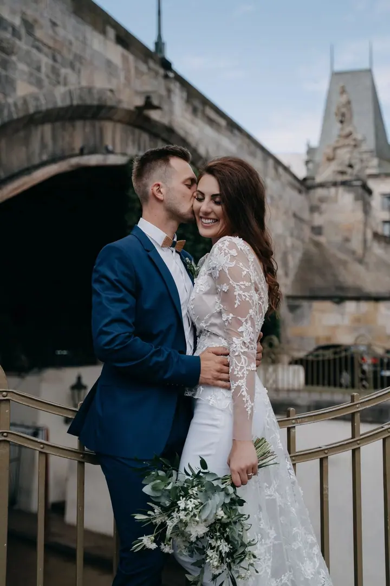
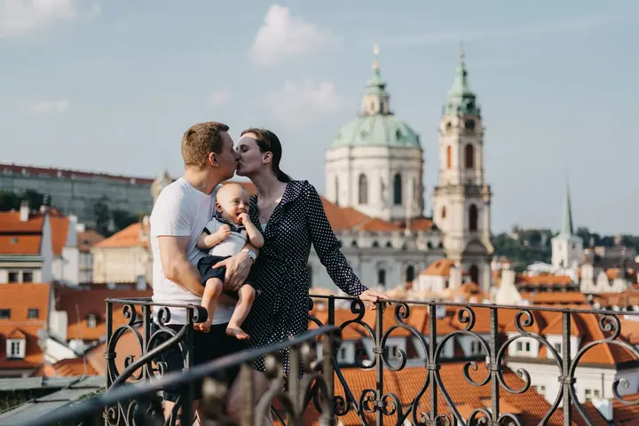

Svatby
Fotím nenápadně celý den, od lehké nervozity a nadšení při přípravách po dojetí během obřadu. Každá svatba je jiná a já chci zachytit právě tu vaši atmosféru.

Jmenuji se Markéta Vlasatá a focení svateb mě hrozně baví. Ráda u vás nenápadně zachytím všechno, co se během dne odehraje, od nervozity při přípravách po dojetí při obř…
Rezervovat termínOd dětství kreslím, maluju a sním o tvůrčí práci, která by mě naplňovala. První foťák jsem dostala asi v osmi letech, byla to jednorázová analogová krabička. Mezitím jsem vystudovala filozofii, několikrát pracovala v zahraničí a skoro dva roky strávila v kanceláři. Právě to mě nakonec přivedlo k rozhodnutí všechno nechat a dělat to, co mě vždycky bavilo: fotit.


Ať mám v ruce foťák nebo štětec, vždycky se soustředím na lidi a jejich příběh. Věřím, že dobrý fotograf nepotřebuje jen dobrou výbavu, ale hlavně opravdový zájem o lidi, které fotí. Nejdůležitější je pro mě autenticita a skutečné emoce, a tak se s vámi ráda nejdřív trochu poznám, abyste před objektivem nebyli nervózní a mohli být sami sebou.
Hodně jsem fotila v Maroku a na Kanárských ostrovech a moc mě to obohatilo. Ráda cestuji a práci beru s sebou.
Co fotím
Fotím nenápadně celý den, od lehké nervozity a nadšení při přípravách po dojetí během obřadu. Každá svatba je jiná a já chci zachytit právě tu vaši atmosféru.
Procházka ve dvou, kde nejde o dokonalé pózy, ale o to, abyste byli sami sebou. Hodí se jako zahřátí před svatbou nebo jen tak pro vás.
Uvolněné focení venku, ve městě nebo v přírodě, kde si děti můžou hrát a vy se nemusíte hlídat. Zajímá mě, jak to u vás opravdu vypadá.
Samostatné portrétní focení pro každého, kdo chce fotky, na kterých se pozná. Vždycky se soustředím na člověka a jeho příběh.
Postup
Pošlete mi termín, místo a pár slov o tom, jak si svůj den představujete. Ozvu se vám a domluvíme se na podrobnostech.
Ráda se s vámi před focením potkám nebo si zavoláme. Když se známe, jste pak před foťákem mnohem uvolnění.
Pohybuju se nenápadně a nechávám věci plynout. Na párové fotky si vyhradíme chvilku, kdy si spolu hlavně odpočinete.
Fotky pečlivě vyberu a upravím a pošlu vám je jako celou galerii. Přesný termín dodání si domluvíme předem.
Otázky
Nebojte se, s tím počítám. Záleží mi na přátelské atmosféře, abyste se mohli uvolnit a být sami sebou. Nejhezčí fotky stejně vznikají, když na foťák zapomenete.
Ano, kromě svateb fotím i předsvatební a párová focení. Je to příjemný způsob, jak se navzájem poznat ještě před velkým dnem.
Nejčastěji fotím v Praze, ale ráda vyrazím i jinam. Fotila jsem třeba v Maroku a na Kanárských ostrovech, práci si na cesty beru s sebou.
Stačí mi napsat termín a místo. Podívám se, jestli mám volno, a domluvíme se na všem ostatním.
